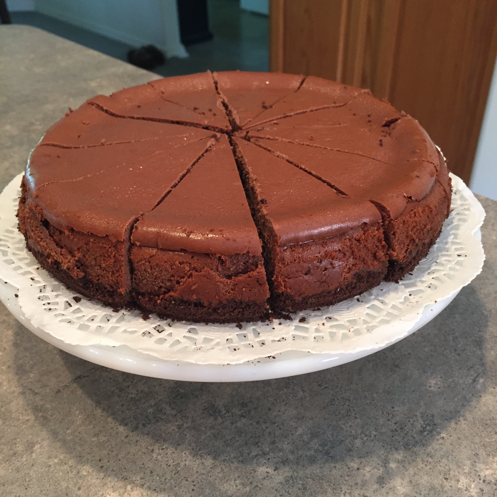

<!DOCTYPE html>
<html lang="en">
<head>
  <meta charset="UTF-8">
  <meta http-equiv="X-UA-Compatible" content="IE=edge">
  <meta name="viewport" content="width=device-width, initial-scale=1.0">
  <style>
    img.one{
      height:30%;
      width:20%;
    }
  </style>
  <title>Document</title>
</head>
<body>
  
</body>
</html>

<h1>Chocolate Bliss Cheesecake</h1>

<h3>Garnish this indulgent chocolate cheesecake with fresh raspberries.</h3>



<h2>Ingredients</h2>
<ul>
  <li>18 OREO Chocolate Sandwich Cookies, finely crushed</li>
  <li>2 tablespoons butter or margarine, melted</li>
  <li>3 (8 ounce) packages PHILADELPHIA Cream Cheese, softened</li>
  <li>¾ cup sugar</li>
  <li>1 teaspoon vanilla</li>
  <li>8 (1 ounce) squares BAKER'S Semi-Sweet Baking Chocolate, melted, cooled slightly</li>
  <li>3 large eggs</li>
</ul>

<h2>Directions</h2>
<ol>
  <li>Preheat oven to 325 degrees F if using a silver 9-inch springform pan 
    (or to 300 degrees F if using a dark nonstick 9-inch springform pan). 
    Mix cookie crumbs and butter; press firmly onto bottom of pan.</li>
  <li>Beat cream cheese, sugar and vanilla in large bowl with electric 
    mixer on medium speed until well blended. Add melted chocolate; mix well. 
    Add eggs, 1 at a time, mixing on low speed after each addition just until blended. Pour over crust.</li>
  <li>Bake 55 min. to 1 hour or until center is almost set. Run knife or 
    metal spatula around rim of pan to loosen cake; cool before removing rim of pan. 
    Refrigerate 4 hours or overnight. Store leftover cheesecake in refrigerator.</li>
</ol>

